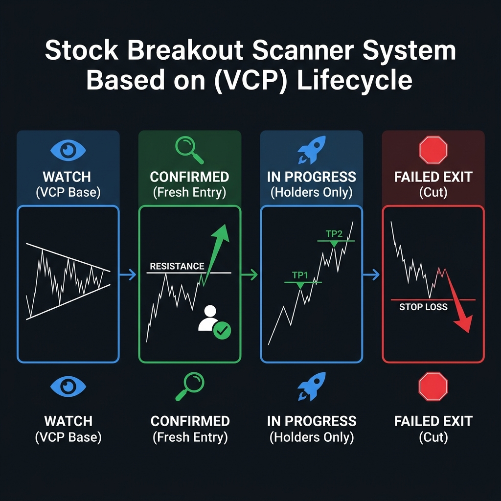
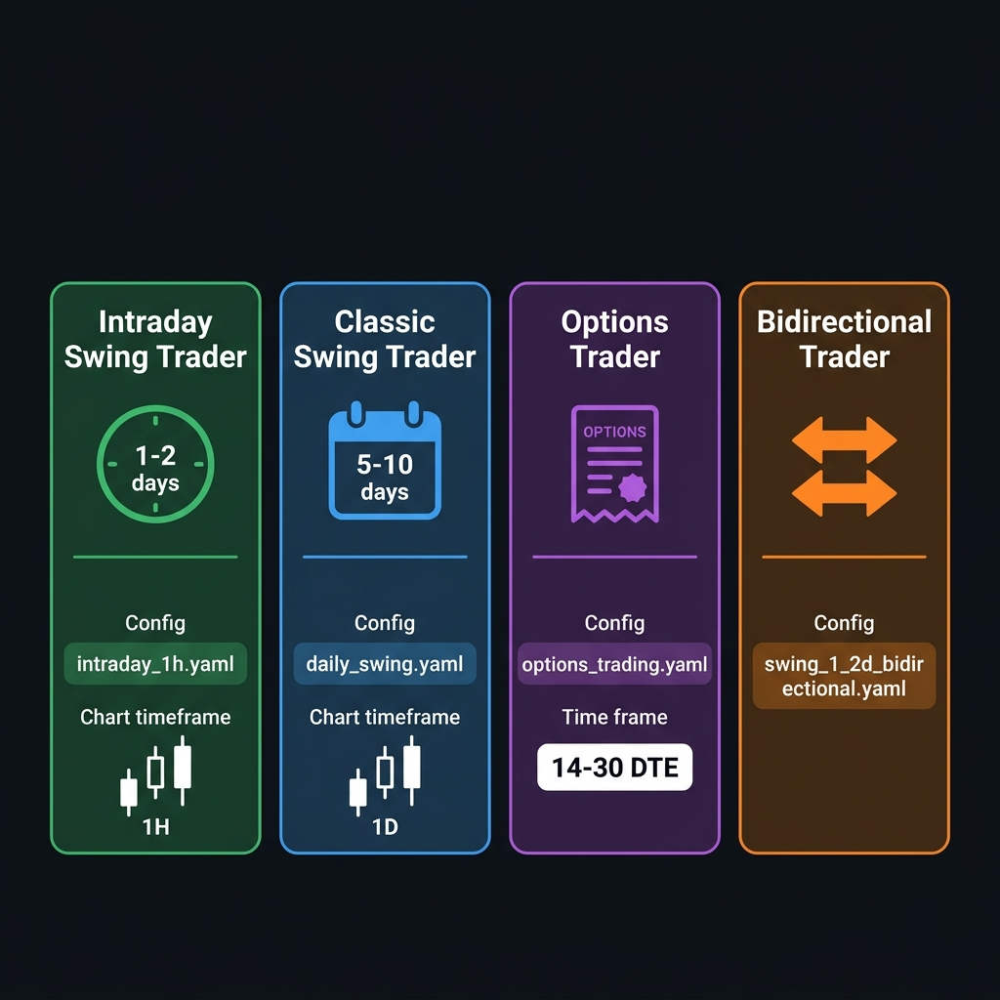
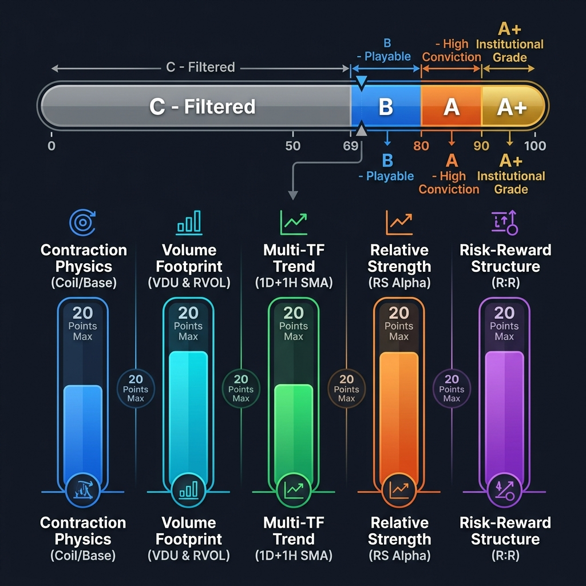

From total beginner to confident trader — every feature, every signal, every decision explained. Step-by-step instructions to trade US stocks, NSE equities, and crypto like an institutional professional.
⚠️ PROVISIONAL badge when it did not → §14The Breakout Scanner is an automated algorithmic system that screens dozens of stocks every day and identifies exactly which ones are about to make a significant price move — so you can enter at the right moment, with the right position size, at the lowest possible risk.
Think of it like this: instead of watching 50 charts for hours hoping something moves, the scanner does all that analysis for you and hands you a ranked shortlist of the best setups — with specific entry prices, stop losses, and profit targets already calculated.
The scanner is built around the Volatility Contraction Pattern (VCP) — a pattern identified by legendary trader Mark Minervini. Here's what it means in plain English:
After a rally, the stock pulls back. Weak holders sell. The price swings are wide — like a rubber band stretched.
Each subsequent pullback is smaller than the last. The stock is "coiling" — like a spring being compressed. Volume dries up (quiet accumulation by institutions).
The stock bursts above its resistance level with a volume surge. This is the spring releasing. The scanner detects this moment and alerts you immediately.
With stop loss behind the base and target calculated in advance, you manage the trade while the scanner tracks it.

Every time you run the scanner, it does the following in sequence:
Open the .env file with any text editor and fill in your Telegram credentials (optional, but recommended for mobile alerts):
# .env — Your private settings (never share this file) TG_BOT_TOKEN=123456789:ABCdef... # Get from @BotFather on Telegram TG_CHAT_ID=-1001234567890 # Your Telegram chat/channel ID
/newbot → follow the instructions.
It gives you a token. Paste that as TG_BOT_TOKEN.
Then add your bot to a channel and use getUpdates to find your chat_id.
The scanner has 4 pre-built configuration profiles, each designed for a different type of trader. Pick the one that matches your lifestyle and risk appetite.

| Your Situation | Recommended Profile | Config File |
|---|---|---|
| I check markets once a day before / after work | Classic Swing Trader | daily_swing.yaml |
| I can watch my phone during the trading day | Intraday Swing Trader | intraday_1h.yaml |
| I want to trade options for leverage | Options Trader | options_trading.yaml |
| I want to profit in both rising and falling markets | Bidirectional Trader | swing_1_2d_bidirectional.yaml |
| I'm a complete beginner | Classic Swing Trader (start here) | daily_swing.yaml |
| I trade NSE India stocks | Intraday or Classic Swing | either + nifty_50_watchlist.txt |
The two production profiles in config/profiles/ are hardened versions of the Intraday Swing profile. They are meant for forward testing first and real money only after that (see §17). The full files are printed in §17.
| Setting | Before | US now | NSE now | Why |
|---|---|---|---|---|
timeframe | Not set — silently fell back to 1h / 60d inside scan_now.py | 1h / 60d | 1h / 60d | No hidden defaults |
breakout.allow_shorts | Missing → shorts were ON | false | false | US 1H backtests: shorts ≈ −0.19R. NSE cash equities cannot be carried short on delivery |
risk.slippage_pct | 0.05% per fill | 0.02% | 0.03% | Liquid large caps fill much closer to the quote |
risk.commission_pct | 0.05% (US) / 0.10% (NSE) | 0.005% | 0.10% (kept) | US large-cap commissions are tiny. NSE 0.10% matches delivery STT (0.1% per side) plus brokerage, GST and stamp duty |
max_friction_r (3 places) | 0.15R | 0.15R | 0.20R | NSE real costs are higher, so the gate needs a slightly wider allowance |
confirmation_policy | Defined twice (85, then 70 — YAML silently kept the last) | One block, 70 | One block, 70 | What actually ran was 70; now the file says so |
crypto_production.yaml was not reviewed or changed in this edition.
A watchlist is simply a text file containing stock symbols — one per line. The scanner only analyzes stocks in your watchlist. Choose based on your market.
| File | Market | Contents | Best For |
|---|---|---|---|
config/watchlist.txt |
US | ~35 top US stocks (NVDA, AAPL, TSLA, META, AMZN…) | Default — start here for US trading |
config/nifty_50_watchlist.txt |
NSE India | All 50 Nifty stocks (RELIANCE.NS, TCS.NS, HDFC.NS…) | NSE traders |
config/nasdaq_50_watchlist.txt |
US | Top 50 NASDAQ stocks | US tech-focused trading |
config/sp_50_watchlist.txt |
US | Top 50 S&P 500 stocks | Diversified US large cap |
config/top30_watchlist.txt |
US | 30 high-liquidity US stocks | Concentrated quality scan |
config/nsetop10_watchlist.txt |
NSE | NSE top 10 + sector leaders | Quick NSE scan |
config/crypto_watchlist.txt |
Crypto | BTC-USD, ETH-USD, SOL-USD and more | Crypto breakout hunting |
config/europe_top30_watchlist.txt |
Europe | Top 30 European stocks | European market trading |
config/japan_top30_watchlist.txt |
Japan | Top 30 Japanese stocks | Tokyo market trading |
config/hk_top30_watchlist.txt |
Hong Kong | Top 30 HK stocks | HK market trading |
config/weekend_watchlist.txt |
US | Stocks suitable for weekend analysis (no time sensitivity) | Weekend review / planning |
Edit any watchlist file and add ticker symbols one per line. Use the Yahoo Finance format:
# US stocks — just the ticker symbol NVDA TSLA AAPL # NSE India — add .NS suffix RELIANCE.NS TCS.NS INFY.NS # Crypto — add -USD suffix BTC-USD ETH-USD SOL-USD # Lines starting with # are ignored (comments)
Instead of a fixed watchlist, the Dynamic Universe Engine automatically screens the broad market and selects the Top 30 most liquid, high-quality stocks each day. It removes low-liquidity stocks automatically.
Use this when you want the scanner to decide which stocks to analyze (instead of a fixed list):
The Dynamic Universe applies these automatic filters:
The fastest way to get a report. Use this for an on-demand scan at any time:
The complete automated pipeline. This is what you should run every morning before market open:
| Flag | Used With | What It Does | Default |
|---|---|---|---|
--watchlist | scan_now | Path to watchlist file to scan | config/watchlist.txt |
--market | both | Market type: us or nse. Controls friction calculation (NSE taxes vs US SEC fees) | us |
--config | both | Path to strategy config YAML (which trading style to use) | config/default.yaml |
--interval | both | Candle timeframe: 1h, 1d, 15m. Overrides config setting | From config |
--period | both | How far back to look: 60d, 1y, 2y. Overrides config setting | From config |
--no-tg | both | Suppress Telegram notification — print to terminal only | Off (TG enabled) |
--slate | scan_now | Show the Trade Slate — exact position sizes with risk budget governance | Off |
--dynamic-universe | scan_now | Auto-screen broad market for Top 30 liquid stocks | Off |
--target-size | daily_scan | How many stocks to select for the dynamic universe | 30 |
--dry-run | daily_scan | Run full pipeline but don't send alerts or write files | Off |
--universe-only | daily_scan | Only generate the dynamic watchlist, skip breakout scanning | Off |
--custom-universe | daily_scan | Provide your own stock list for dynamic filtering | None |
This builds the Top 30 universe, runs the scanner, shows trade setups, and sends results to Telegram.
After running the scan, just watch your Telegram. The scanner has already told you what to buy, at what price, with your stop and targets. No need to stare at charts.
Signals form when an hourly candle closes and the scanner only sees closed candles. Yahoo's US 1h candles start at :30 (9:30, 10:30 … 15:30 ET), so scan shortly after each candle closes during the session. A single pre-market scan only shows the previous session's last candle. In backtests there was no reliable time-of-day edge, so there is no "magic hour".
The scanner output is organized into 3 numbered sections. Each section has a specific meaning and tells you what action to take.
Here is a real example of what a fresh entry looks like in the terminal:
| Field | Example | What It Means | Your Action |
|---|---|---|---|
| Symbol | NVDA | Stock ticker symbol | This is the stock to buy/sell |
| Direction | ▲ BUY | ▲ BUY = buy the stock (it's going up). ▼ SELL = short sell (it's going down) | Place a Buy or Sell order |
| Type | BREAKOUT | BREAKOUT = fresh breakout above resistance. RETEST = stock broke out earlier, pulled back, holding above pivot | BREAKOUT = more aggressive. RETEST = safer, lower risk |
| CP | 875.20 | Current Price right now | Check if it's still near Entry |
| Entry | 871.50 | The ideal price to enter. Place your buy order at or near this price | Set your limit buy order at this price |
| Stop (SL) | 848.30 | Stop Loss — if price falls to this level, exit immediately. Placed below the base support | Place a stop loss order at this price |
| Risk % | 2.66% | Distance from Entry to Stop as a % of entry price. Lower = tighter stop = better setup | Keep below 5%. Reject if > 5% |
| Cost (R) | 0.03R | Transaction friction (brokerage + taxes + slippage) as a fraction of your risk unit. 0.03R = 3% of your risk | Good if <0.15R. If >0.15R, setup is rejected automatically |
| P&L % | +0.42% | Current unrealized profit/loss since entry (if you had entered at Entry price) | Shows how far price has moved from entry |
| Vol | 2.3x | Relative Volume — how much more volume than normal. 2.3x = 2.3× the 20-period average. Higher = more institutional participation | Want ≥ 1.2x for a breakout. 2x+ is excellent |
| Sector + Arrow | [Technology ↗] | The sector this stock belongs to, and whether it's outperforming (↗), neutral (→), or underperforming (↘) its benchmark | ↗ = tailwind. ↘ = headwind for this trade |
| ⭐ 1D | ⭐ 1D | The Daily (1D) chart SMA50 is also confirming the uptrend — higher timeframe alignment | This is a bonus confidence signal. ⭐⭐ Multi-TF is even better |
| Grade [Score] | A+ [94] | Composite quality score (0–100) and letter grade. Combines all 5 pillars | A/A+ = trade it. B = playable. C = skip |
| TP1 | 894.70 | Take Profit 1 — sell 50% of your position here (1R profit = 100% of your risk unit) | When price hits TP1, sell half, move stop to breakeven |
| TP2 | 917.90 | Take Profit 2 — sell the remaining 50% here (2R profit) | Let the rest run to TP2 with breakeven stop |
| Status | [ENTER NOW] | ENTER NOW = fresh entry within tolerance. DO NOT CHASE = price moved too far. TP1 HIT = already at target. DO NOT ENTER | Only enter on "ENTER NOW" signals |
| Field | Example | What It Means |
|---|---|---|
| Resistance | 871.50 | The upper boundary of the base. A breakout above this = buy signal |
| Support | 848.30 | The lower boundary of the base. If price breaks below = no setup |
| Width % | W: 3.2% | How tight the consolidation base is. Lower = better coil. Below 4% is excellent |
| Coil 🗜️ | 🗜️ 0.4x | Decay ratio — how much volatility has contracted. 0.4x = each wave is 40% of the previous. Lower = tighter coil |
| VDU 💧 | 💧 0.6x | Volume Dry-Up — volume is 60% of average during base. Institutional accumulation — quiet before the storm |
| Bias | Strong Upside Bias (3/3) | How many of 3 simple filters agree: (1) 1H trend, (2) sector relative strength vs its benchmark, (3) analyst rating (US stocks, from Yahoo) or index regime (NSE / crypto). Section 1 only lists bases with 3/3. Note: the daily trend is not part of this number — it feeds the score instead (§7). If Yahoo is throttled, filters 2 and 3 can silently drop out (§14). |
| ⚠️ PROVISIONAL | [⚠️ PROVISIONAL: DATA INCOMPLETE] | Daily or sector data could not be fetched, so the score is missing pillars. The setup is not blocked by the score — treat it as a technical-only signal and read §14 before acting |
| ⏳ AWAITING CONFIRMATION | [⏳ AWAITING CONFIRMATION] | Score is below the auto-entry threshold (70 in production profiles). Enter only after a later candle trades above the signal price |
Here's how to read an entire scan output, step by step:
Every setup gets a composite score from 0 to 100. This is an objective, data-driven ranking calculated from 5 pillars — each worth a maximum of 20 points. No guessing, no intuition — pure quantitative analysis.

Ultra-tight coil, strong volume dry-up, 1D+1H aligned, accelerating RS. Highest conviction. Enter immediately when status = CONFIRMED.
Strong setup on most pillars. Tradeable without additional confirmation. Auto-entry eligible under every profile.
Good setup but may lack one confirmation. With the older 85 threshold B waits for the next bar to break the signal high; production profiles use 70, so B auto-enters there.
Too many missing or weak confirmations. The scanner shows these in VCP Base section but they are not presented as tradeable entries.
confirmation_policy.min_auto_entry_score. The older default was 85 (A and above). The production profiles use 70, so B-grade setups (70–79) also count as confirmed. Below the threshold, a setup shows AWAITING CONFIRMATION until price trades above the signal level on a later candle.
⚠️ PROVISIONAL badge, the grade reflects a Yahoo problem, not the chart. See §14.
Every setup the scanner identifies has three key prices calculated for you. You never have to figure these out yourself.
| Price Level | How It's Calculated | Your Order Type |
|---|---|---|
| Entry Price | The resistance level of the base + a small buffer (0.10–0.15%). This is where price "breaks out" of the consolidation. | Buy Limit order at Entry price. Or Market order if price is already within 0.5% of Entry. |
| Stop Loss | Placed below the structural support of the base (lowest point of the consolidation minus a 0.25% buffer). This is your maximum loss point. | Immediately place a Stop Loss order at this price after your entry is filled. |
| TP1 (1R) | Entry + (Entry − Stop) × 1.0. Your first target = 100% of your risk unit. You sell 50% of your position here. | Set a Limit Sell order for 50% of your position at TP1. |
| TP2 (2R) | Entry + (Entry − Stop) × 2.0. Your second target = 200% of your risk unit. Sell remaining 50% here. | Set a Limit Sell order for the remaining 50% at TP2. Move stop to breakeven after TP1 hit. |
TP1 HIT — DO NOT ENTER" for others.
This is the most important part of trading — and most beginners get it wrong. The scanner's Trade Slate (run with --slate) calculates this automatically, but here's the formula so you understand it:
With this approach, no single trade can ever lose more than 1% of your account — even if the worst happens and the stock gaps down through your stop.
| Situation | What to Do | Scanner Signal |
|---|---|---|
| Price hits TP1 | Sell 50% of shares. Move stop to entry (breakeven). Let remaining 50% run. | TP1 HIT in Section 2B |
| Price hits TP2 | Sell remaining 50%. Trade is complete. Full 2R profit achieved. | Not shown (you monitor this) |
| Price hits Stop Loss | Your stop order auto-executes. You lose ~1% of account. Move on. | Symbol may appear in Section 2C |
| Trade held for max time | Exit at market regardless of profit/loss. Time exit prevents dead money. Intraday = 2 days. Swing = 10 days. | Not shown (track manually) |
| Scanner shows FAILED EXIT | Price has fallen back inside the base after the breakout. Exit immediately — this setup has failed. | Section 2C — ❌ EXIT SIGNAL |
| Scanner shows DO NOT CHASE | You missed the entry window. Do not buy now — the risk/reward has deteriorated. Wait for the next setup. | Section 2B — EXTENDED |
| ✅ Ideal Candidate | ❌ Avoid | |
|---|---|---|
| Price | US: Above $5. NSE: Above ₹50 | Penny stocks — too much spread and manipulation |
| Volume | Average daily volume >500,000 shares (US) | Stocks that barely trade — you can't exit at your price |
| Base Width | Below 8% — tight, controlled consolidation | Wide, choppy bases above 12% — too much noise |
| Trend | Above 50-day SMA with SMA rising | Stock below 50-day SMA — trading against the trend |
| Earnings | No earnings within 3 days | ⚠️ EARNINGS in <3 days — scanner blocks these automatically |
| Grade | A or A+ grade | C grade — too many weak signals |
| When to buy | US: 9:30–10:30am EST (opening hour) or after lunch dip NSE: 9:15–10:15am IST | Last 30 minutes of session — manipulation and whipsaws |
The Institutional Trade Slate is an optional output layer that converts scanner signals into a fully sized, risk-governed daily trade plan. Run it with --slate flag or it appears automatically in daily_scan.py.
It applies four automatic safeguards:
Before any trade appears in the Trade Slate, it passes through 7 automatic rejection checks:
| Rule | Threshold | Why It Matters |
|---|---|---|
| Missing Stop Loss | Stop = 0 or missing | No synthetic fallbacks — if the scanner can't calculate a structural stop, the trade is rejected entirely |
| Structural Risk Too Wide | Stop distance > 5.0% | Stops wider than 5% create poor risk:reward — your position size becomes too small to matter |
| Unfavorable Payoff | TP1 < 1.0× risk distance | You need to make at least as much as you risk. RR < 1.0 is a losing game mathematically |
| Imminent Earnings | Earnings ≤ 3 trading days away | Earnings can gap a stock 10–20% overnight. This destroys your stop and creates undefined risk |
| Excessive Friction | Round-trip costs > max_friction_r (0.15R US, 0.20R NSE) | If brokerage + taxes + slippage eats more than that share of your risk unit, the edge disappears. Cost inputs must be realistic (see below) |
| Late Chase / Extended | Price >1.0% or >0.5 ATR past pivot | Buying too late means your stop gets wider and RR deteriorates — you're buying someone else's trade |
| Base Trap | >2 failed breakout wicks in base | A base where price repeatedly spikes above resistance and fails is a trap — institutions are selling into each spike |
When configured, the scanner sends beautifully formatted alerts to your Telegram. Here's how to read the mobile card format:
871.50 | Stop: 848.30 | Risk: 2.66%A+ [94] • ⭐ 1D Macro875.20894.70 | TP2: 917.90Vol: 2.3x RVOL 🔥 | Technology +2.1% ↗| What You See | What It Means | Your Action |
|---|---|---|
| 🚨 FRESH BREAKOUT | Immediate alert — just happened | Act quickly — within next 1–2 candles |
| 🔄 RETEST HOLD | A prior breakout that pulled back and is holding its pivot | Lower risk entry opportunity |
Entry: 871.50 | Your buy price | Place limit buy at this price |
Stop: 848.30 | Your stop loss | Place stop loss immediately after entry fills |
A+ [94] | Grade A+, score 94/100 — highest conviction | Full position size (1% risk) |
| ⭐ 1D Macro | Daily chart also confirms uptrend | Extra confidence — multi-timeframe aligned |
| Vol: 2.3x RVOL 🔥 | Volume is 2.3× normal — strong institutional buying | Good confirmation |
| Technology +2.1% ↗ | Stock outperforming its tech sector by +2.1%, and RS is rising | Sector tailwind — favorable |
| 🟢 ENTER NOW | Price is still within entry tolerance — fresh signal | Enter now |
| ⚠️ EXTENDED | Already moved past entry tolerance | Do NOT enter — wait for next setup |
| ⚠️ PROVISIONAL: DATA INCOMPLETE | Daily / sector data failed to load (usually a Yahoo throttle). The grade is understated | Technical-only signal: check the daily chart yourself, consider half size, or re-run in 10–15 minutes (§14) |
| ⏳ AWAITING CONFIRMATION | Score is under the auto-entry threshold | Wait for a later candle to trade above the signal price |
When you run a full scan, the Telegram report mirrors the terminal output in mobile-friendly card format:
Every behavior of the scanner can be customized via the YAML config files in config/. Here is every option explained:
| Key | US prod | NSE prod | Effect |
|---|---|---|---|
risk.slippage_pct | 0.02 | 0.03 | Percent of price lost on every fill (entry, TP1 leg, exit). Backtest edge is ~zero near 0.08–0.10 |
risk.commission_pct | 0.005 | 0.10 | Percent of turnover charged per side. NSE figure includes delivery STT, brokerage, GST, stamp duty |
friction.base_slippage_pct / commission_pct | 0.02 / 0.005 | 0.03 / 0.10 | Used by the friction engine for slate sizing. Keep identical to the risk values so the two never disagree |
confirmation_policy.min_auto_entry_score | 70 | 70 | Score needed to skip the "awaiting confirmation" step. Must appear once in the file — a duplicate key silently overrides the first |
breakout.allow_shorts | false | false | If the key is missing, shorts are ON. Always set it explicitly |
timeframe.interval / period | 1h / 60d | 1h / 60d | Set explicitly in production profiles |
| Key | Default | Options | Effect |
|---|---|---|---|
timeframe.interval | 1h | 1h, 1d, 15m | The candle size to analyze. 1h for intraday swing, 1d for classic swing |
timeframe.period | 60d | 60d, 1y, 2y | How far back to download data. Daily swing needs 2y (2 years) to build SMA50 |
| Key | Default | Effect |
|---|---|---|
trend.sma_length | 50 | The moving average period used for trend detection (50-bar SMA) |
trend.use_trend_filter | true | Require stock to be above SMA50 before showing any signal |
trend.use_slope_filter | false | When true, also requires SMA50 to be sloping upward (more strict) |
trend.slope_lookback_bars | 5 | How many bars back to measure the SMA slope |
| Key | Default | Effect |
|---|---|---|
base.base_lookback | 20 | How many bars to look back to detect a base (20 bars = ~20 hours on 1H) |
base.max_base_range_pct | 12.0% | Maximum allowed base width. Wider than this = too sloppy, rejected |
base.max_tight_range_pct | 6.0% | Width threshold for calling a base "tight" (tight bases score higher) |
base.require_tightening | false | When true, requires progressive contraction waves (T1→T2→T3 getting smaller) |
base.min_setup_bars | 5 | Minimum number of bars the base must have formed over |
base.max_setup_bars | 30 | Maximum bars. Bases older than this are ignored (stale) |
base.min_box_density_pct | 75.0% | At least 75% of closes must be inside the base range (quality gate) |
| Key | Default | Effect |
|---|---|---|
volume.use_breakout_volume | true | Require above-average volume on the breakout candle |
volume.breakout_multiplier | 1.20 | Breakout volume must be at least 1.2× the 20-period average |
volume.vdu_threshold | 0.75 | Volume Dry-Up threshold — base volume must be ≤75% of average to confirm dryup |
volume.rvol_threshold | 1.20 | Minimum Relative Volume on breakout bar (1.2 = 20% above normal) |
volume.use_hourly_volume_profile | false | When true, compares volume against the same time-of-day median (removes open/close bias). Recommended for 1H intraday config |
| Key | Default | Effect |
|---|---|---|
breakout.allow_shorts | false | Enable SELL (short) signals in addition to BUY signals. Only for bidirectional config |
breakout.buffer_pct | 0.10% | How far above resistance price must close to confirm breakout (prevents false close) |
breakout.close_location | 0.55 | Breakout candle must close in the upper 45% of its bar range (0.55 = top 45%). Prevents shooting star traps |
breakout.require_momentum_candle | true | Requires the breakout candle to have a solid body (not a doji or small candle) |
breakout.min_body_pct | 40.0% | Minimum candle body as % of the full bar range. Filters weak, indecisive candles |
breakout.use_open_confirmation | false | When true, requires the next bar's open to remain above the breakout level (prevents gap-and-fail) |
| Key | Default | Effect |
|---|---|---|
risk.atr_multiplier | 1.50 | Stop = ATR × multiplier below support. Wider ATR multiplier = looser stops |
risk.min_stop_pct | 0.75% | Minimum stop distance. Prevents stops so tight they get hit by normal spread noise |
risk.max_stop_pct | 5.00% | Maximum stop distance. Setups with wider stops are automatically rejected |
risk.account_size | $100,000 | Your total trading capital. Used for position sizing calculations |
risk.risk_per_trade_pct | 1.0% | What % of your account to risk per trade. 1% on $100k = $1,000 max risk per trade |
risk.use_cost_filter | false | When true, rejects trades where total friction > max_friction_r |
risk.max_friction_r | 0.15 | Maximum allowed friction as fraction of risk unit (0.15 = 15% of 1R). NSE production uses 0.20 |
| Key | Default | Effect |
|---|---|---|
target.tp1_r | 1.0 | TP1 = Entry + (risk × 1.0). Take 50% profit at 1R gain. |
target.tp2_r | 2.0 | TP2 = Entry + (risk × 2.0). Take remaining 50% profit at 2R gain. |
| Key | Default | Effect |
|---|---|---|
management.use_breakeven | true | After TP1 hit, move stop to entry (breakeven) — protects profit on 50% while running the rest |
management.max_hold_days | 10 | Maximum days to hold. Automatically exits if target not reached. Prevents dead money. |
management.use_time_exit | true | Enforce the max hold days time exit |
management.use_failed_breakout_exit | false | When true, exits immediately if price closes back inside the base after breakout. Aggressive loss control. |
| Key | Default | Effect |
|---|---|---|
portfolio_guard.enabled | false | Enable/disable the full portfolio guard. Set true for Trade Slate in scanner.report() |
portfolio_guard.account_equity | $100,000 | Total trading capital for position sizing |
portfolio_guard.max_daily_risk_pct | 2.0% | Maximum total risk across all trades in one day (2% = $2,000 on $100k) |
portfolio_guard.max_active_trades | 4 | Maximum concurrent open positions |
portfolio_guard.max_sector_allocation_pct | 25.0% | Max capital in any one sector (prevents concentration risk) |
portfolio_guard.max_trades_per_sector | 1 | Max simultaneous trades in same sector (prevents correlation stacking) |
portfolio_guard.allow_fractional | false | Set true for crypto fractional unit sizing |
| Key | Default | Effect |
|---|---|---|
rejection_gate.enabled | true | Master switch for all automatic rejection rules |
rejection_gate.max_stop_pct | 5.0% | Reject if stop distance exceeds this % |
rejection_gate.max_friction_r | 0.15 | Reject if round-trip costs exceed 15% of risk unit |
rejection_gate.min_rr_ratio | 1.0 | Minimum reward-to-risk ratio. Reject if RR < 1.0 |
rejection_gate.earnings_buffer_days | 3 | Reject if earnings report within this many days |
rejection_gate.max_extension_pct | 1.0% | Reject if price is more than 1% past the pivot (anti-chase) |
rejection_gate.max_failed_breakouts_in_base | 2 | Reject if more than 2 prior failed breakout attempts in the same base |
Not necessarily broken — but check before you assume. A quiet day is genuinely common: the scanner only shows high-quality setups, and the production profile is strict. However, a Yahoo Finance throttle (HTTP 429) can look exactly the same: missing daily/sector data lowers scores, and the US analyst-rating point can silently drop, which empties the VCP-base list. Check for [DataHealth] warnings in the log, look for ⚠️ PROVISIONAL badges, and re-run in 10–15 minutes before concluding the market is quiet (§14). The Heartbeat Monitor will alert you via Telegram if 3+ consecutive sessions produce zero candidates.
No. VCP Bases are on the watchlist — not buy signals. Wait for the scanner to show it in Section 2A (ENTER NOW). Buying inside the base means your stop is far away (bad RR) and you're guessing which direction it breaks. Patience pays.
Let it go. The scanner will show "DO NOT CHASE" or "EXTENDED" for this reason. There will be another setup. Chasing extended breakouts is one of the most common ways beginners blow up accounts — you're buying at someone else's exit point with an already-deteriorated risk:reward.
Start with the profile that matches your trading style:
Intraday (1–2 day) → intraday_1h.yaml.
Swing (multi-day) → daily_swing.yaml.
Options → options_trading.yaml.
Don't modify config values until you understand the effect of each parameter. The defaults are empirically validated.
Yes. Use the nifty_50_watchlist.txt or nsetop10_watchlist.txt, add the --market nse flag, and the scanner automatically uses Indian market friction calculations (STT, GST, Stamp Duty) in the rejection gate. NSE tickers end in .NS.
1R = 1 Risk Unit = the dollar amount you risked on a trade. If your entry is $100, stop is $95, and you buy 200 shares → your risk = 200 × $5 = $1,000 → 1R = $1,000. TP1 at +1R means your profit = $1,000 (your risk amount). Expressing everything in R units makes performance comparable across all trades regardless of position size or stock price.
Use a smaller watchlist (top30 instead of nifty_50), or reduce the --period (e.g., --period 30d for 1H configs). The scanner fetches live data from Yahoo Finance — speed depends on your internet connection and how many stocks are in your list.
For US stocks (1H config):
• Pre-market: 8:30–9:00 AM EST — plan your setups
• Market open: 9:30–10:30 AM EST — best breakout window, highest volume
• Lunch dip: 12:00–1:00 PM EST — second opportunity window
• Avoid: Last 30 min before close (3:30–4:00 PM EST) — manipulation and reversals
For NSE India:
• Pre-market: 8:45–9:10 AM IST
• Opening session: 9:15–10:15 AM IST — highest quality breakouts
• Avoid: Last hour before 3:30 PM IST close
The scanner is designed for accounts of any size. With the default 1% risk per trade, you need enough to buy at least 1 share. However, practically:
US stocks: $5,000–$10,000 minimum to have meaningful position sizes.
NSE India: ₹50,000–₹1,00,000.
Crypto: $500+ (fractional sizing supported).
Remember: the scanner calculates share sizes based on YOUR account size — just update risk.account_size in your config.
The scanner gets its data from Yahoo Finance for free. Yahoo throttles (HTTP 429) when many symbols are requested quickly — and scan_now.py fires several extra calls per symbol (daily trend, sector, analyst info, earnings). Before v2.1 a failed call just meant "0 points" with no warning.
| Status field | Values | Meaning |
|---|---|---|
htf_data_status | OK / STALE / FAILED | Daily (higher-timeframe) evidence |
sector_data_status | OK / STALE / FAILED | Sector relative-strength evidence |
regime_data_status | OK / STALE / FAILED | Index / market regime evidence |
provisional_data_incomplete | true / false | True when daily or sector data was not OK |
[DataHealth]) and the scorer's evidence text says "unavailable" instead of showing a fake low number.confirmation_status = "PROVISIONAL - DATA INCOMPLETE", and shows [⚠️ PROVISIONAL: DATA INCOMPLETE] in Telegram.[DataHealth] lines. Many of them = Yahoo was throttled.A forward test is only worth something if you can prove what the scanner said at the time. Two new modules do that.
breakout_scanner/audit_ledger.pyEvery scan appends one JSON line per setup to logs/forward_test_ledger.jsonl (written by scan_now.py and by the slate pipeline).
| Field group | What is stored |
|---|---|
| Identity | timestamp, config_hash, profile_name, symbol, direction |
| Decision | state, status, code, reason, quant_score/grade, bias_score |
| Price plan | current, entry, stop, risk %, TP1, TP2 |
| Data health | htf / sector / regime status, provisional flag |
| Shadow feature | is_above_daily_sma50 — recorded only, not used to filter (so you can later test whether it should be) |
| Execution (you fill in) | your real fill, slippage, exit — currently empty fields |
| What-if outcome | filled in later by the tracker |
Config hash: a fingerprint of the active YAML. If it changes mid-test, the hash changes — so you can see exactly which rows ran under which settings. If the hash changes, the test restarts.
breakout_scanner/outcome_tracker.pyThe production daemon runs it every night at 00:15 (server clock, UTC on EC2). For each ledger row it downloads recent 1h bars and walks forward up to 24 bars to see whether the stop, TP1 or TP2 would have been hit first, writing the result into what_if_outcome. You can also run it by hand: python3 -m breakout_scanner.outcome_tracker.
Honest numbers matter more than a nice grade label. These come from replaying the engine on cached 1H data (about 2.9 years, Nov 2023 – Oct 2026) for large-cap Nasdaq and financial names, with next-bar-open entries, slippage, stop-first fills and gap stops.
| Finding | What it means for you |
|---|---|
| Production profile: 383 trades, profit factor ≈ 1.11 | A small positive edge, roughly +0.05 to +0.1R per trade. Real, but thin |
| Last ~12 months were statistically flat | The edge is regime-dependent. Do not extrapolate the full-period figure |
| AAPL / MSFT / NVDA-type mega-caps lost money | Mega-caps are over-traded and mean-revert; expect better behaviour on mid-large liquid names. Test it on forward data |
| Tightest stops (<1%) were the best bucket (about +0.22R) | This is why the old cost model hurt — it blocked exactly these |
| Shorts ≈ −0.19R | Why allow_shorts: false in production |
| Edge vanishes near 0.08% slippage per fill | Your real fills decide everything. Use limit orders, liquid names, avoid the first and last minutes |
| When (SGT) | Do |
|---|---|
| ~22:30 – 04:00 (US regular hours, 1h after DST changes) | Scan right after each hourly candle closes. Check the data-health lines. Paper-trade or place small orders from A/B signals only |
| After the close | Fill in your actual entry / exit prices and slippage for every trade you took |
| Weekly | De-duplicate the ledger, compare what-if vs your fills, check the config hash never changed |
config_hash restarts the count.except: pass).info call is still made per symbol, so Section 1 can empty out under throttlingEvery changed line carries a # FIX: comment. Click to expand and copy.